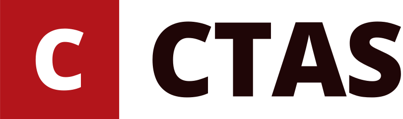
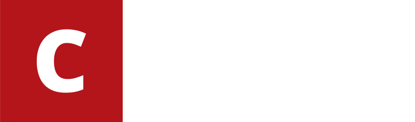
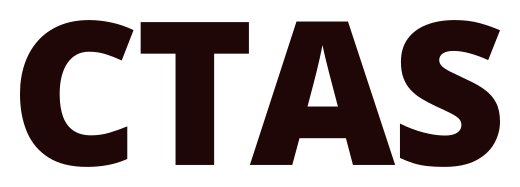

CTAS
Trường Công nghệ và Khoa học ứng dụng, Trường Đại học Ngoại thương. Hệ thống thiết kế cho website: màu, chữ, khoảng cách, logo và thành phần giao diện.
College of Technology and Applied Science, Foreign Trade University. Version 1, 09.11.2026.
Guidelines
CTAS is the website of the Trường Công nghệ và Khoa học ứng dụng (College of Technology and Applied Science), a member school of Foreign Trade University (FTU), Hanoi. The system takes FTU's red and pairs it with a square, editorial layout in the manner of a research university site: serif headlines, sans body, hairline borders, no rounded corners.
Content fundamentals
- Write in Vietnamese first, with full diacritics. English is a second language toggle, never mixed into a Vietnamese sentence except for proper technical names (Docker Swarm, LoRA, RAG, Moodle).
- Voice: an institution speaking plainly about real work. State what happened, who did it, and the numbers. "Sinh viên K63 ngành Khoa học máy tính giành Giải Nhất toàn quốc", not "Hành trình đầy cảm hứng…".
- Name people with their academic title as written by the faculty:
TS,ThS,ThS NCS,PGS.TS,CN. Cohorts asK63,K64,K65. - Dates in news meta are
dd.mm.yyyy(16.06.2026); a range is18-22.09.2026. Month headers in timelines readTHÁNG 10, 2026. - Do not use the em dash, the en dash, the middle dot or the right arrow. Use a hyphen, a comma, a colon, or a new sentence.
- No emoji in UI chrome. Emoji that appear inside quoted fanpage posts stay as published.
- Section kickers (eyebrows) are short noun phrases:
TIN TỨC & SỰ KIỆN,ĐỘI NGŨ,STUDENT-LED PROJECTS. - Buttons say what happens:
Đọc bàiopens an article on this site;Tìm hiểu thêm ↗opens an external product (ftds.online). The ↗ arrow means "leaves the site"; internal links carry no arrow. - Every compound word is one unit: never break a line between the syllables of
máy tính,khoa học,dữ liệu,trí tuệ,nhân tạo,sinh viên. Join them with a no-break space (the site'sextra.jsdoes this automatically).
Visual foundations
Color
- Pages sit on
surface(cream paper). Cards and boxes aresurface-raised. Group quiet content onsurface-soft. - Copy is
ink; secondary copy (dates, excerpts, captions) isink-muted. Never set body copy inbrand-ink. brandis FTU red. Spend it on: primary buttons, the CTAS mark square, the 4px top rule (rule-top) on article covers and the article aside, the label bar of the news ticker. One brand-filled button per view.brand-inkis the red for text: eyebrows, dates in meta rows, project status labels, tag text, link hover.- Dark bands use
maroonwithcreamtext andblush-softsecondary text; on a band, the highlighted card is filledblushwithmaroon-deeptext. - Chips and tags:
tintfill withbrand-inktext. - The default theme is light. Dark is offered through the moon toggle and swaps surfaces to maroon-black; the red accents lift to
blushfor text.
Type
- Exactly two families on any page, never a third.
display(Source Serif 4) for H1-H3, stat numbers and the big pull quote.sans(Open Sans) for everything else. Both load from Google Fonts. - H1
display-xl, section H2display-lg, article titledisplay-md, card titlestitle. - Body copy
body, justified on both sides. Intro paragraphslead, justified. Narrow cards (body-sm) are left-aligned so justification does not open wide gaps. - Kickers use
eyebrow(uppercase, 0.12em tracking) preceded by the two-dot mark: a blush dot and a brand dot, 10px each, overlapping 4px. - Status and field labels use
label(uppercase, 0.14em). - On phones H1 clamps to 30-40px; never let a heading overflow its column.
Spacing and layout
- Content width 1240px max. Side gutter
space-4(16px) on phones,space-5and up on desktop. - Sections are
space-9apart on desktop andspace-8on phones. - Card padding
space-5; grid-cell paddingspace-6. - Grids are ruled, not floating: adjacent cells share a
hairlineborder inline-stronginstead of gaps and shadows (project grid, focus-area grid, stat strip). - Two-column article layout: body column plus a 300px aside,
space-8apart; stacks below 900px.
Shape, borders, elevation
- Square system.
radius-noneeverywhere.radius-roundonly for the FTU seal and the round "Liên hệ" CTA in the footer band. - Borders, not shadows. Cards take a
hairlineinline. The only shadow isshadow-floatunder the hero news ticker. - A 4px brand rule on top (
rule-top) marks the primary object of a page: the article cover, the article aside, the lecturer name plate. - Pull quotes carry a 6px brand rule on the left (
rule-side).
Imagery
- Use real photos from the faculty's own posts (cnkhdl.ftu.edu.vn and the KHOACNKHDL fanpage). No stock photos of anonymous people.
- Images are shown in full color. No grayscale filters.
- Where a post has no photo, show the media placeholder: a
brandblock with a faint 135° stripe,CTASset indisplayand the category inlabel. Never substitute an unrelated stock image. - Cover images are 16:10 in cards and up to 560px tall on article pages.
Motion
- Hover: cards change border to
brandand lift by 5px; photos scale to 1.04. 0.3-0.35s ease. - Tickers (news headlines, lecturer cards) scroll linearly and pause on hover. Respect
prefers-reduced-motionby slowing them to near-static. - The homepage intro is the one orchestrated moment. Nothing else animates on load beyond a short fade-up.
Focus and states
- Every interactive element shows a 2px solid
focusring with 2px offset. - Primary button hover moves from
maroon-deeptobrand; brand buttons press tobrand-deep. - Active filter chips invert:
inkfill withsurfacetext.
Iconography
- No icon library. The site uses a few typographic glyphs only:
↗external link,▾dropdown,☰mobile menu,✕close,☾/☀theme toggle. - Do not use `
,,or-anywhere. Separate items with a comma; write ranges with a hyphen (18-22.09.2026`). - List bullets are 6px squares in
blush(on maroon) orbrand(on blush).
Logos and marks
- The FTU seal (
assets/Logos/ftu-seal.png) appears in the top FTU bar, the nav and the footer strip, always round (radius-round), at 26-64px. It is FTU's mark: do not recolor, crop or redraw it. - The CTAS mark is typographic: a
brandsquare with a whiteC, followed byCTASin boldsans. Build it with theBrandMarkcomponent; there is no image file for it. - On phones the nav shows only the CTAS mark; the seal and the "Đại học Ngoại thương" line are hidden to save width.
Components
Button: actions. Variantsprimary(maroon-deep),brand(red),outline,light(on maroon bands).Eyebrow: section kicker with the two-dot mark.Tag: tech tags and category chips.NewsCard: news grid item with cover, category, date, title and excerpt.MediaPlaceholder: stands in for a missing photo.ProductCard: a product in the dark products band (LMS, FTULLM, Cloud) with bullets and two links.ProjectGrid: ruled grid of student-led projects.LecturerCard: portrait card for the lecturer ticker.NewsTicker: the "TIN MỚI" headline strip.StatStrip: ruled row of big numbers.BrandMark: the CTAS typographic mark.
Color
Each swatch shows the light value (left) and the dark value (right).
#fffef4#1f0607Page background (the site's cream paper; maroon-black at night).
#ffffff#3a0b0dCards, aside boxes, the news ticker and the article sidebar.
#f4f3e6#2a0a0bQuiet fills behind grouped content: stat strips, form fields.
#1f0607#fffef4Headings and body copy on surface, surface-raised and surface-soft. 19:1 light, 19:1 dark.
#5a5f7a#d6b1aeSecondary copy: dates, excerpts, captions on surface and surface-raised. 6.2:1 light, 8.7-9.9:1 dark.
rgba(31,6,7,0.12)rgba(255,180,168,0.16)Hairline borders around cards, grid cells and dividers.
rgba(128,128,128,0.3)rgba(255,180,168,0.3)Ruled grids (project grid, focus-area grid, stat strip).
#b3151b#c8202aFTU red. Primary buttons, the CTAS mark square, the 4px top rule on cards and covers, label bars. on-brand white holds 6.9:1 light, 5.7:1 dark.
#8e0f14#8e0f14Pressed state of brand fills.
#b3151b#ffb4a8Red text: eyebrows, dates in meta rows, status labels, link hover. 6.8:1 on surface (light); blush 10-11:1 on maroon surfaces (dark).
#ffffff#ffffffText and icons on brand fills.
#3a0b0d#3a0b0dDark bands: the products band, the ftu.edu.vn top bar, the footer, the 'LET'S TALK' block. Text on it is cream.
#1f0607#1f0607Default (non-brand) button fill and the very top FTU bar.
#fffef4#fffef4Text on maroon and maroon-deep. 16.8:1 on maroon.
#ffb4a8#ffb4a8Highlight card fill in the products band (FTULLM), eyebrow dot, bullet squares on maroon. Text on it is maroon-deep (11.4:1).
#ffd9d3#ffd9d3Secondary copy on maroon bands. 13:1 on maroon.
rgba(179,21,27,0.07)rgba(255,180,168,0.1)Tag and category chip background; hover wash on grid cells. Pair with brand-ink text.
#b3151b#ffb4a82px solid focus ring, 2px offset, on every interactive element. 6.8:1 on surface (light), 11.4:1 (dark).
Type
Display: Source Serif 4. Text: Open Sans. Both from Google Fonts. No third family.
Page H1 and the hero line. Clamp to 30-40px on phones.
Section headings (H2).
Article title on news detail pages, featured-news title.
Card and grid-cell titles (H3).
Numbers in stat strips, coloured brand-ink.
Intro paragraph under a section heading; justified.
Article body; justified, never wider than the column.
Card excerpts and descriptions; left-aligned inside narrow cards.
Buttons, nav links, form controls.
Uppercase kicker above a heading, in brand-ink, with the two-dot mark before it.
Status lines on project cells, sidebar field labels, footer headings. Uppercase.
Tech tags and category chips on tint.
Meta rows under titles, in ink-muted.
Spacing & shape
4pxTight gaps: tag rows, icon-to-text.
8pxButton groups, chip gaps, gallery gutters.
12pxMeta rows, eyebrow-to-dot gap.
16pxPhone side gutter; minimum page padding.
22pxCard inner padding (news cards, aside box).
26pxGrid-cell padding in the project grid and product cards.
36pxSection header to content.
56pxColumn gap in two-column layouts; phone section padding.
90pxDesktop section padding (top and bottom).
Radius, borders, shadow
0Everything rectangular: cards, buttons, inputs, chips, images. The CMU-style square system has no other radius for UI.
50%Only circular marks: the FTU seal and the round 'Liên hệ' CTA.
4pxBrand-coloured top rule on article covers, aside boxes and lecturer name plates.
6pxBrand-coloured left rule on pull quotes (FTU Labs motto).
1pxAll card and grid borders.
0 24px 50px rgba(31,6,7,0.12)Only the floating news ticker over the hero. Cards use borders, not shadows.
Logos

assets/logo/ctas-logo.svg
assets/logo/ctas-logo-white.svg
assets/logo/ctas-wordmark.svg
assets/logo/ctas-wordmark-white.svgassets/logo/ctas-mark.svgassets/logo/ftu-seal.pngComponents
Live components from components/bundle.js (namespace window.CTAS, React 18). Props are listed in components/index.d.ts.
BrandMark
The CTAS typographic mark: a brand-red square with a white C, then the name in bold sans.
- Use it at the left of the nav bar and in compact headers. It links home (
href, default#). parent(default "Đại học Ngoại thương") is the small uppercase line above the name;showParent={false}hides it, as the site does on phones.namedefaults to "CTAS". Do not replace the square with an image or change its colour frombrand.- Next to it on desktop the site places the FTU seal (
assets/Logos/ftu-seal.png) and a thin divider; that seal is FTU's mark, not part of this component.
Button
Square action button in four variants; renders an <a> when given href, otherwise a <button>.
variant:primary(maroon-deep, the default; nav "Đăng ký ngay", "Xem tất cả"),brand(FTU red; the one main call to action in a view),outline(secondary action beside a brand button),light(cream, only on maroon bands).children: the label. End with for a link that stays on the site and ↗ for one that leaves it. Externalhrefs open in a new tab automatically.blockmakes it full width (mobile menu, product card footers).- Do: one
brandbutton per view. Don't: round the corners, add icons, or put twobrandbuttons side by side.
Eyebrow
Uppercase section kicker with the two-dot mark, placed directly above an H2.
children: a short noun phrase (2-4 words). It is uppercased by CSS; write it in sentence case.onDarkswitches the text toblushfor maroon bands.- One eyebrow per heading. It labels the section; it never repeats the heading.
Tag
Small square label for technologies on project cells and for news categories.
children: one word or product name, as written by its maker (llama.cpp,Docker Swarm).activeinverts it toinkonsurface; use it only for the selected filter chip on the news list.- Up to three tags per card.
MediaPlaceholder
Stands in for a photo when the original post has none.
category: shown bottom-left inlabelstyle; pass the post's category.labeldefaults to "CTAS".- It fills its container and keeps a 16:10 ratio when the container has no height.
- Never use a stock photo in its place; this block is the honest "no photo" state.
NewsCard
A news item in the news grid: cover, category chip, date, title, excerpt and a read link.
- Consumer provides
title,date(dd.mm.yyyy),category,excerpt(about 200 characters),href(the article page) andimage(the post's own first photo). - Without
imagethe card showsMediaPlaceholderwith the category. Never pass a stock photo. ctadefaults to "Đọc bài".- Lay cards out in a 3-column grid with 22px gaps (2 columns under 1000px, 1 under 640px); cards in a row stretch to equal height.
ProductCard
A technology product on the maroon products band, with a short description, three points and two links.
- Place it on a
maroonsurface (the.ct-bandwrapper in the preview); it is not designed for cream. - Consumer provides
name,domain(the product's host, shown small above the name),description(one or two sentences),points(up to three strings),learnHref(the live product; opens in a new tab as "Tìm hiểu thêm ↗") andintroHref(the article that explains it, "Giới thiệu"). imageis optional.highlightfills the cardblush; use it for the middle card of three only.
ProjectGrid
A ruled grid of projects: cells share hairline borders, with no gaps or shadows.
- Consumer provides
items:{ status, title, description, tags?, image?, href? }.statusis a short uppercase line such as "Đang vận hành, 06.2026" or "Hoàn thành". columnsdefaults to 3 and drops to 1 on phones. Give it a multiple of the column count, or accept one short row at the end.- Images are optional per cell and bleed to the cell edges. External
hrefs open in a new tab.
LecturerCard
A portrait card for one lecturer, used in the scrolling "Giảng viên" strip.
- Consumer provides
namewith the academic title as the faculty writes it (TS,ThS,ThS NCS),role(position, else field),photo(from the lecturer's profile) andhref(their profile page). - Without
photothe card shows the first letter of the given name (the last word) onbrand. - Cards are 230px wide (170px on phones). In the strip, repeat the list twice and translate by -50% so the loop is seamless; pause on hover.
NewsTicker
The "TIN MỚI" strip: a red label, latest headlines scrolling left, and an "all news" link.
- Consumer provides
items:{ date, title, href }, newest first, up to 20. labeldefaults to "TIN MỚI" ("LATEST" in English);allHrefandallLabelset the right-hand link, hidden on phones.secondssets one loop's duration (default 120). The strip pauses on hover and slows to near-still withprefers-reduced-motion.- It sits over the hero with
shadow-float, the only shadow in the system.
StatStrip
A ruled row of large numbers with short labels.
- Consumer provides
items:{ value, label }. Values are real counts from the source (nodes, papers, portfolios); never round up or invent. - 3-4 items. The row stacks vertically under 520px.
Files
index.htmlthis guidetokens.jsonall tokens as datatokens.cssthe same tokens as CSS variables and text-style classescomponents/bundle.js,components/bundle.css,components/index.d.tscomponents, styles and props;components/<Name>/README.mdusagelib/React 18.3.1 used by the guideassets/logo/logos (SVG outlined, PNG 2000px, transparent);assets/photos/reference photosREADME.mdguidelines as text